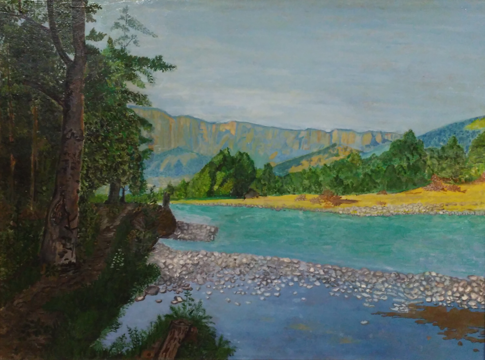

Солнца луч коснувшись гор вершин, Светом озарит волшебный край, Переливом рек, красой долин, Души оживит седой Домбай Бриллиантов россыпью горя Разрывая небо пополам, Над Эльбрусом вспыхнула заря Облаками к горизонта берегам... Словно птица окрыленный Тебердой Карачаевск сердцу силу подарил, Под Черкесской светлою звездой Адиюха гордый стан в веках застыл И бежит прекрасной жизни путь, Горцев дух Всевышнего моля Ведь твою свободу не согнуть Карачаево-Черкесия моя... Шамил